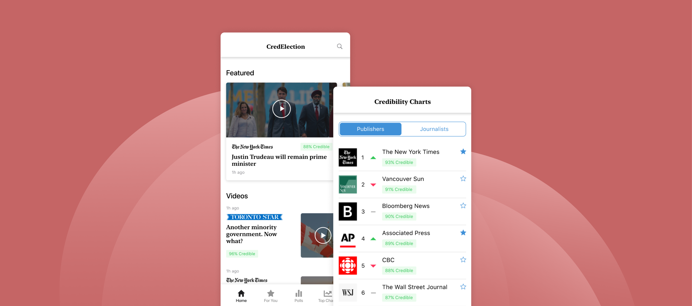
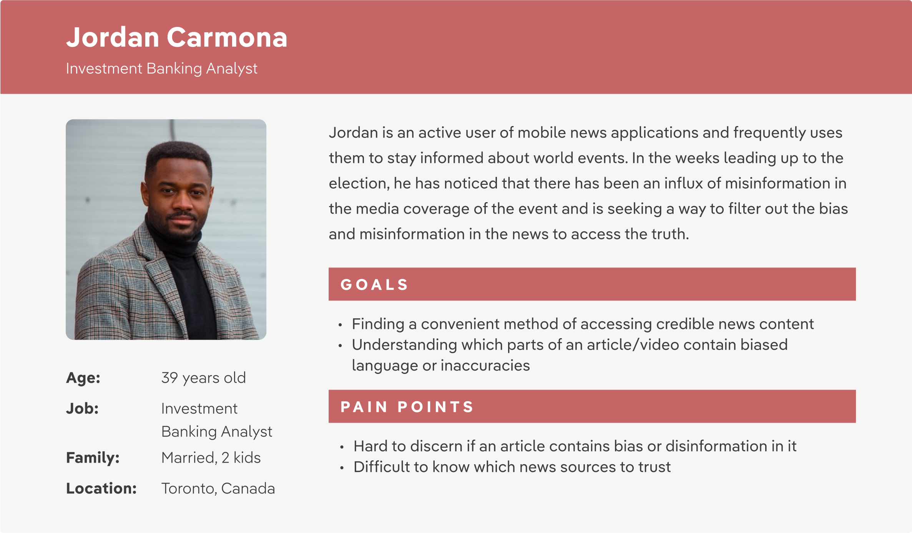
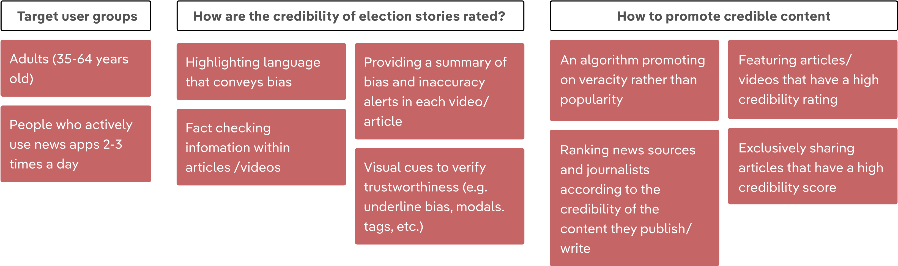
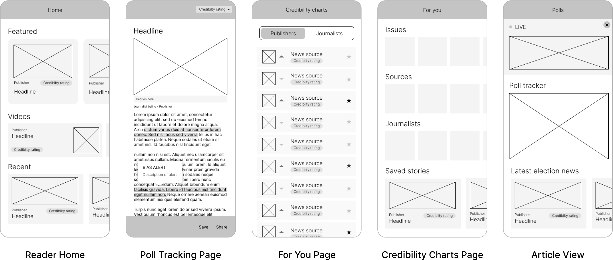
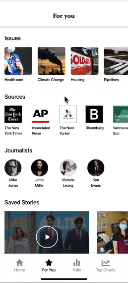
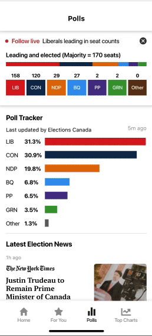

Creating a user-centric mobile-first experience that increases trust and credibility in election
content
NEW YORK TIMES x ADOBE CREATIVE JAM 2021 — 3RD PLACE WINNER

MY TEAM
Product Designer (me)
UI/UX Designer (Tony Lu)
MY ROLE
User research, wireframing,
prototyping, interaction design
Project context
The Adobe Creative Jam competition is aimed at inspiring designers to approach and design a solution for a
given challenge. Over the course of a week, I worked alongside another designer to create CredElection, a
mobile-first experience that increases trust and credibility in election content. After pitching our solution to
a panel of industry experts, we were awarded 3rd place out of 300+ teams.
STEP 1: DISCOVERY
Discover insight into the problem
Election news is accessible today in ways that were unimaginable even just a decade
ago. With the rise of technology, sources, and outlets, it is becoming increasingly more challenging to know
what political information is reliable, credible, and what or who should be trusted.
26%
of Americans are confident in their ability to recognize fake news
16%
of Americans trust news organizations to present unbiased political/social issues
1 in 4
Americans trust the news media to “get their facts straight”
STEP 2: DEFINE
Define the area to focus upon
In order to narrow down the problem space, we realized that we had to get to know our user group by exploring who
they were, including their goals and frustrations.
Research into potential user groups yielded that a majority of news app users are male-identifying individuals
within the age group 35-64 years of age. These individuals are most likely to possess a higher level of education
and to be the chief income earner in their household. Based on these statistics, we conducted user interviews with
individuals that aligned with this user group to learn more about them.

STEP 3: DEVELOPMENT
Develop potential solutions
In our ideation session, we asked ourselves a series of crucial questions to help us understand exactly what
issues we needed to address. Using these questions, we brainstormed a variety of different solutions.

STEP 4: DELIVERY
Develop potential solutions
USER FLOW
We created a user flow diagram as a visual representation of the user’s journey as they interact with the
product. By mapping out the user flow from the opening of the app to each screen, we gained a thorough
understanding of what steps we needed to take in order to build out the final prototype.
WIREFRAMES
Based on our user flow, we created low fidelity wireframes using Adobe XD.

Introducing CredElection
FINAL PROTOTYPE
The last part of our design process was creating the final prototype of our product. To complete this step we
tailored the visual design of our app to deliver a clean and simple user interface for users to easily
navigate.
Prototype link here
Easily access top stories all in one place
CredElection first brings the user to the home page where the user can quickly view featured stories, videos,
recent news, and the most credible publishers and journalists.
View the credibility of an article
Each article is analyzed and assigned a credibility rating. Opening up an article allows the user to view a
summary detailing the areas of bias and inaccuracy. Scrolling through the article allows you to view the exact
locations of detected bias and inaccuracies to provide the user with more context.
In addition, an
article can be saved for future perusal and can be shared if its credibility rating is greater than 70%.

Personalize the user experience
The “For You” tab allows users to view and manage certain issues, news sources, and journalists that they are
interested in. This screen also gives users access to articles and videos that they have saved.

Live Election Updates
The “Polls” tab gives users the opportunity to access updated polling information from trusted sources, view
the latest election news and receive live election results on the day of the election.
Reflection
Exploring an unfamiliar problem space
When conducting research into the problem space, I found that it was important for me to take the time to
thoroughly explore the issues with misinformation and bias in election content since it was a space that I
didn’t have much experience with. It was important for me to develop a deep understanding of the issues that we
wanted to solve in addition to the specific user groups affected by these problems in order to create a solution
that accurately addressed the problems.
NEXT STEPS
The next step for CredElection would be to conduct usability testing sessions to understand how users interact
with the application as well as helping us identify areas that could be improved upon.